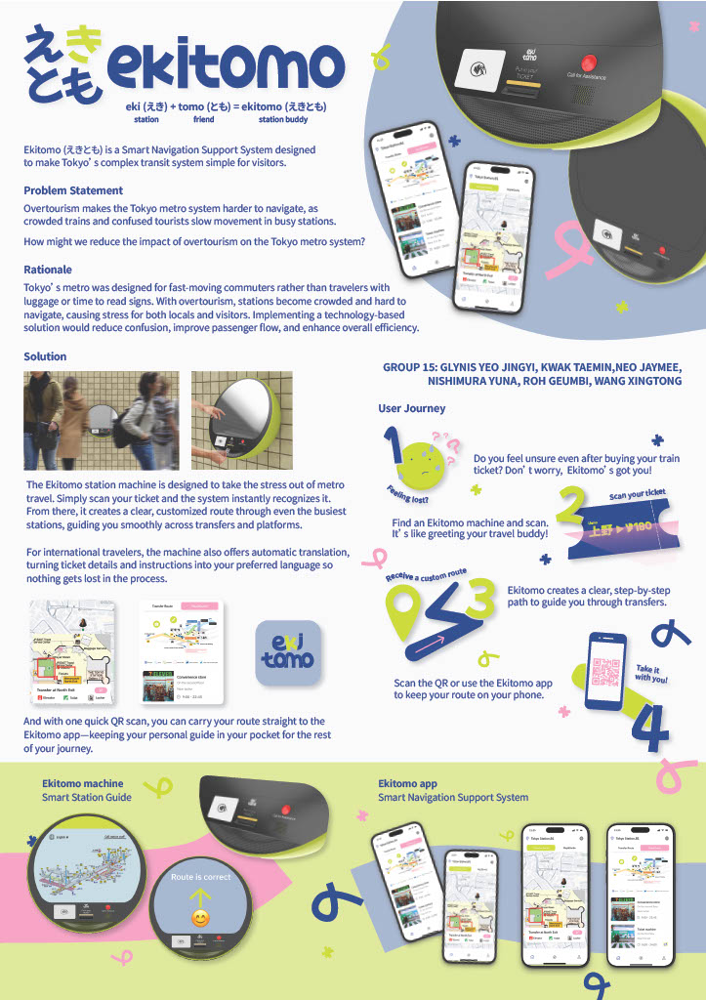

えきとも -ekitomo-
ISDW Group15
The Ekitomo station machine is designed to take the stress out ou metro travel.
Simply scan your ticket and the system instantly recognizes it.
From there, it creates an clear, customized route through even the busiest stations guiding you smoothly across transfers and platforms.
For international travelers, the machine also offers automatic translation, turning ticket details and instructions into your preferred language so nothing gets lost in process.